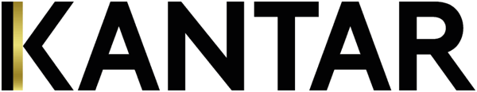

Kantar · Enterprise tech
Taking a tech giant's brand pulse
Result $3.6M in annual revenue, and a growth plan for each market.
A global enterprise tech company needed to know how its brand was landing, market by market. Using quarterly brand health tracking, I analyzed brand equity and customer perception data with Tableau and statistical models, then turned the findings into market-specific growth strategies that guided where the company invested.